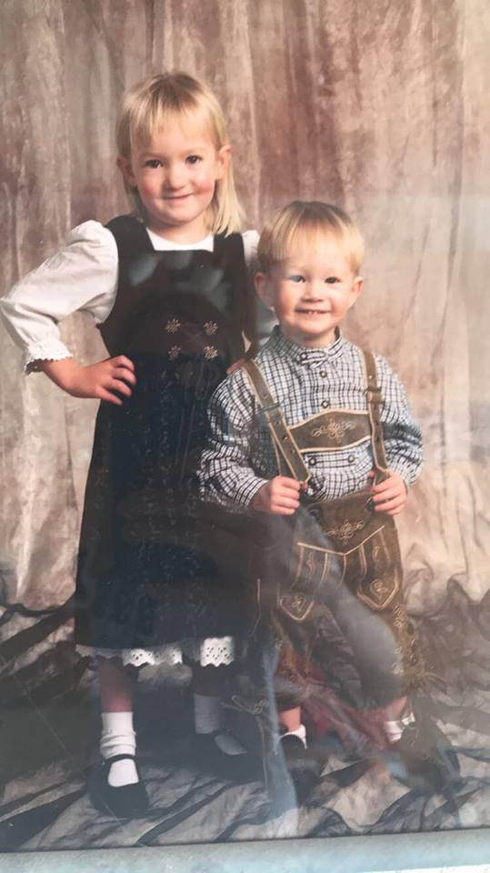

My name is Joshua Lumpkin! This page is all you need to know about me!
In here you can read all about:
- My Life
- My Passions
- My Future Plans
Chronicle of my life
- January 5th, 1999
- On this day in Munich, Germany I was born to my parents, Carl and Birgit Lumpkin.
- July 17th,2004
- We moved from our town of Vilseck, Germany to Columbia, SC!
- August 28th,2004
- I began school at North Springs Elementary.
- August 21st, 2006
- We moved to a new home in Elgin, SC and began going to Doby's Mill Elementary.
- August 21st, 2010
- Began Middle school at Stover Middle school.
- August 28th, 2013
- Began school at Lugoff-Elgin Highschool.
- January 7th, 2017
- Graduated a semester early from Highschool.
- August 19th, 2017
- Moved down to Charleston, SC to attend College of Charleston.
Passions of mine
- Researching new topics
- Cars
- Haiti
- Being involved with Church and Younglife
Future Plans
- Plan A
- Graduate CofC with a CIS degree
- Get some form of a horticulture degree
- Start a cannabis grow specializing in CBD products
- Plan B
- Join the cybersecurity club at CofC
- Get a internship in Charleston or Toronto pertaining to Cybersecurity
- Graduate CofC
- Work in the Cybersecurity field
- Plan C
- Start internship at a company in Munich this summer
- Graduate CofC
- Move to Germany and begin working in Munich